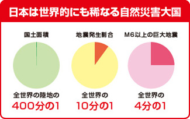
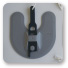
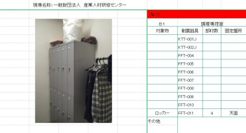
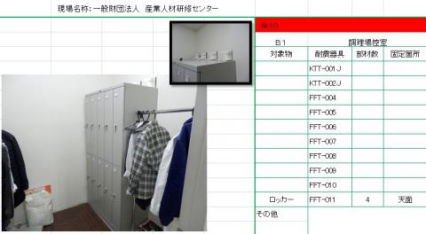
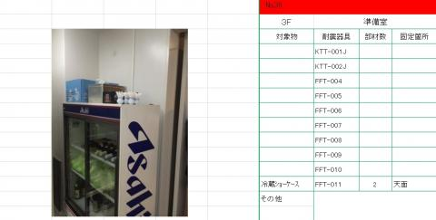
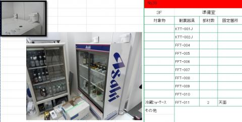
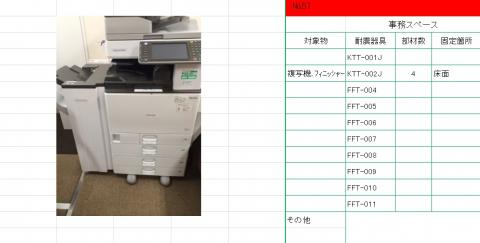
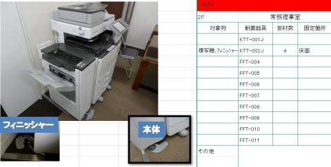

震災に備えた
「オフィスの安全対策」は
大丈夫ですか？
振動吸収方式の制振器具がオフィスの安全を守ります。
家具転倒防止器具「ＫＴＴ」シリーズの発売元として、現場調査から施工までご相談を承ります。
ＵＲ都市機構技術研究所にて、阪神淡路大震災の再現波で震度7相当の実証実験済
ネジや釘を使わないので、家具や壁を傷つけません
KTT-001J〜005J（シートタイプは5年）
地震対策屋内診断士が、危険個所の危険度を写真付きでランク付け



巨大地震では、高層建物で
多大な室内被害が危惧されています。
近い将来に発生するとされる東海・東南海・南海地震などの巨大地震では、高層建物において長周期地震動による多大な室内被害の発生が危惧されています。
地震発生時には、会社内の様々な危険物から発生直後の身を守ることが最優先されます。オフィスの安全対策について →
オフィスの地震対策を、
知る・選ぶ・備える。
BCPの運用に欠かせない安全対策のポイントから、商品選び、プロによる診断・施工、概算費用の把握まで。
オフィスの安全対策について
BCPの運用に欠かせない安全対策のポイント

商品紹介
オフィス家具・機器等に合わせて選べる商品ラインナップ
ダンパー機能付制振器具
「ＫＴＴシリーズ」
従来の「固定式」ではなく「振動吸収方式」。建物から家具へ伝わる地震の振動を吸収し、壁や家具にかかる負荷を軽減するため、粘着方式で震度７対応が可能です。


制震オフィスは、
２つの法人様のニーズを満たします。
自社でお取り付けをするか、プロにお任せするかを選択することができます。費用、手間、時間等、お客様ごとの優先事項に合わせて選択してください。
設置作業実績
制震オフィス化診断から設置作業までご依頼いただいた、一般社団法人 産業人材研修センター様の実施例です。






beforeは「制震オフィス化診断報告書」より一部抜粋。 afterは「制震オフィス化結果報告書」より一部抜粋。
実施例の詳細を見る →制振器具の実験動画
対策をしていないオフィスと、複写機移動・転倒対策キットを設置した場合の動画です。
お知らせ・防災情報
弊社の住所、電話番号、代表者名を無断で使用した通信販売サイトが確認されており、お客様からのお問い合わせをいただいております。当店とは一切の関わりはございません。偽サイトの多くは、代金振込後も商品が届かない、など手口が共通しています。お買い物の際には、十分にご注意下さい。（2023/01/31）
お知らせ お知らせ一覧 →
- 2025/11/17企業向け安全対策製品「KTTシリーズ」新展開のお知らせ
- 2025/03/03価格改定のお知らせ
- 2024/12/12「消臭防災トイレ30回分セット」の廃番および販売終了について
- 2024/12/02年末年始休業のお知らせ
- 2024/07/10夏季休業日のお知らせ
- 2024/04/08ゴールデンウィーク休業のお知らせ
- 2024/01/24新製品リリースならびに廃番製品のお知らせ
- 2023/07/24夏季休業日のお知らせ
- 2023/01/31【注意喚起】弊社を名乗った偽物サイトにご注意ください
- 2022/08/10再エネ電力供給証明書を取得しました。
- 2022/07/29夏季休業日のお知らせ
- 2021/08/02製品販売終了のお知らせ
- 2021/07/14夏季休業日のお知らせ
- 2021/01/08【重要】緊急事態宣言に伴う当社の対応について（2/2一部改訂）
- 2020/07/16【新商品情報】ウェイトバッグ発売のお知らせ
- 2020/07/10【新商品情報】水のう君Ⅱ 1mセット発売のお知らせ
- 2020/06/18【新商品情報】飛沫防止パネル発売のお知らせ
- 2020/05/04【重要】緊急事態宣言延長に伴う当社の対応について
- 【重要】緊急事態宣言延長に伴う当社の対応について
- 2020/04/08ゴールデンウィーク休業のお知らせ
- 2020/04/08【重要】緊急事態宣言に伴う当社の対応について
- 2020/04/01【新商品情報】水のう君Ⅱ発売のお知らせ
- 2019/12/06年末年始休業のお知らせ
- 2019/09/1610月以降の消費税について
- 2019/08/01【重要】KTTユーザー登録サーバーメンテナンス終了のお知らせ
- 2019/07/19夏季休業日のお知らせ
- 2019/07/05【重要】KTTユーザー登録一時停止（サーバーメンテナンスの為）
- 2019/04/082019年度ゴールデンウイーク休業期間について
- 2018/12/03年末年始休業のお知らせ
- 2018/08/02【新商品情報】7年保存米粉クッキー発売のお知らせ
- 2018/07/25夏季休業日のお知らせ
- 2018/04/01室内菌無クリーンスプレー 販売終了のお知らせ
- 2017/12/09年末年始休業のお知らせ
- 2017/07/18夏季休業日のお知らせ
- 2017/06/28【展示会情報】オフィス防災EXPO2017のお知らせ
- 2017/03/21Ｍonthly Magazine 総集編をアップしました。
- 2017/02/24３月納品希望のお客様へ
- 2017/02/017年・10年保存食・水セットの販売を開始しました。
- 2016/12/08年末年始休業のお知らせ
- 2016/07/26夏季休業日のお知らせ
- 2016/07/12【募集】制震オフィス 施工代理店を募集致します。
- 2016/07/05【展示会情報】オフィス防災EXPO2016のお知らせ
- 2015/11/16本社移転のお知らせ
- 2015/07/24夏季休業日のお知らせ
- 2015/06/12【展示会情報】オフィス防災EXPO2015のお知らせ
- 2015/06/10販売代理店および施工代理店募集のお知らせ
- 2015/04/07オフィスの現状調査・室内安全診断をご活用下さい。
- 2015/04/01「制震オフィス」一般社団法人 産業人材研修センター様の施工例を掲載しました。
- 2015/03/25ビル経営新聞掲載のお知らせ
- 2015/02/18一部商品価格改定のお知らせ
- 2015/02/01一部商品の包装及び品番が変更となりました。
- 2014/12/04年末年始休業のお知らせ
- 2014/10/01埼玉県のチャレンジ経営宣言登録企業として登録されました。
- 2014/09/01埼玉新聞掲載のお知らせ（8月29日付）
- 【新発売】 水害対策商品を追加しました。
防災情報 防災情報一覧 →
- 2024/01/11都道府県防災情報一覧更新のお知らせ（東京都）
- 2021/04/01震度ハザードステーションへのリンクはこちらです。
- 2021/04/01「全国地震動予測地図」の２０２０年版が公表されました。
- 2018/06/26「全国地震動予測地図」の２０１８年版が公表されました。
- 2018/05/16都道府県防災情報一覧のお知らせ
- 2018/03/26東京消防庁 家具転倒防止PV公開のお知らせ
- 2018/02/19東京都防災アプリが3月1日より配信されます！
- 2018/02/19女性視点の防災ブック「東京くらし防災」が3月1日に発行されます！
- 2017/11/29国土交通省ハザードマップポータルサイトがオープン
- 2017/05/18東京都民間一時滞在施設備蓄品購入費用補助事業の募集が始まりました。
- 2016/09/01東京都民間一時滞在施設備蓄品購入費用補助事業の募集期限は11月30日です。
- 2015/08/04東京都民間一時滞在施設備蓄品購入費用補助事業の募集期限は11月30日です。
- 2015/01/17福祉避難所をご存知ですか？
- 2015/01/17避難行動要支援者登録制度（災害時要援護者避難登録制度）をご存知ですか？
- 2014/09/03東京都民間一時滞在施設備蓄品購入費用補助事業の募集期限は9月30日です。
- 2014/08/25９月１日は「防災の日」です。
オフィスの地震対策、
まずはお気軽にご相談ください。
資料請求・お見積のご依頼・制震オフィス化診断や設置作業のご相談を承ります。